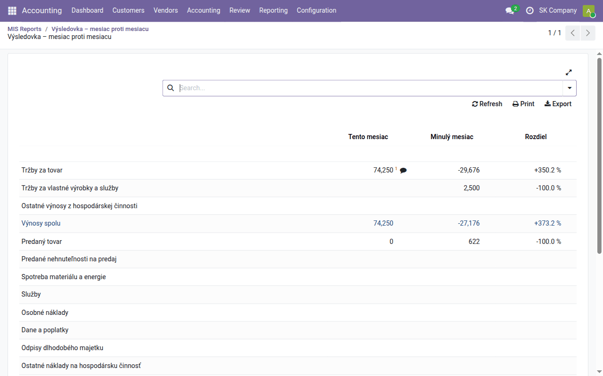
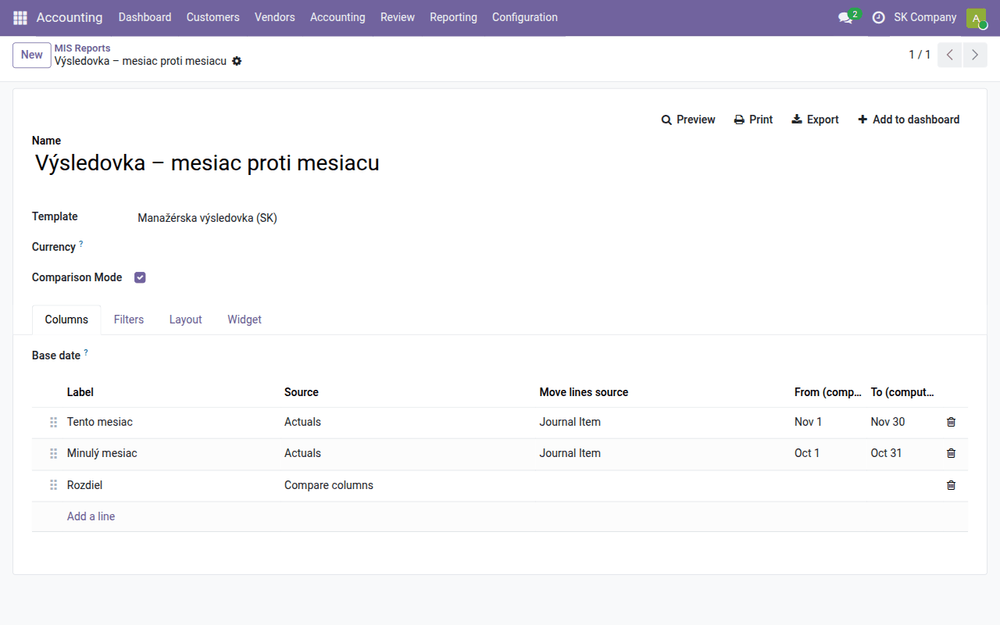
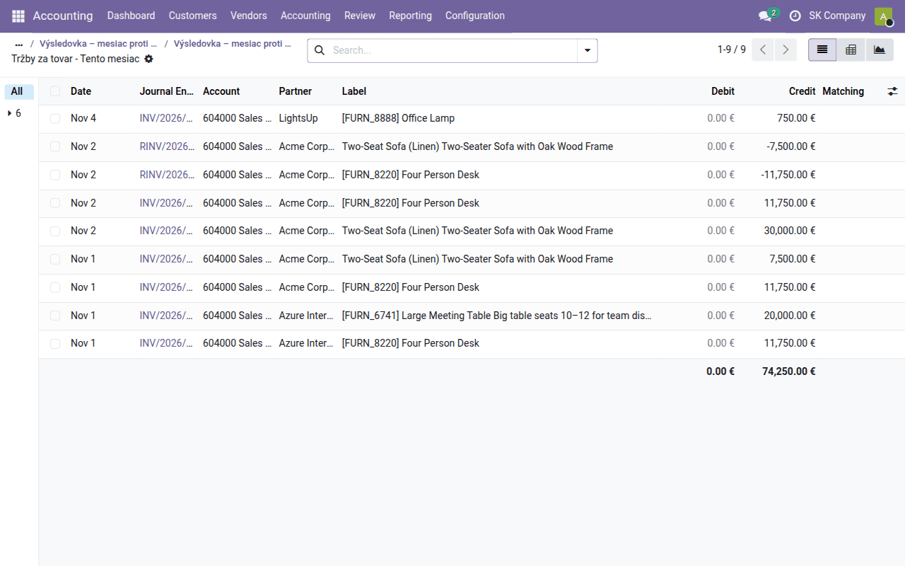
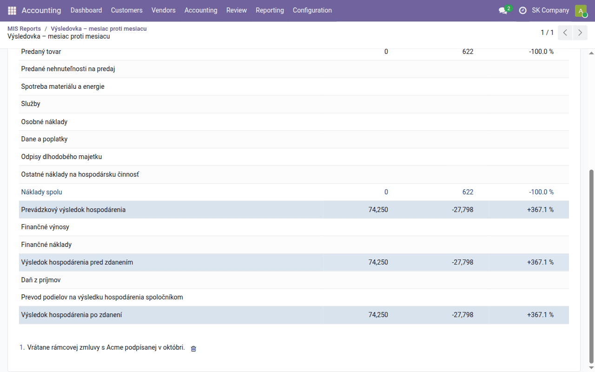
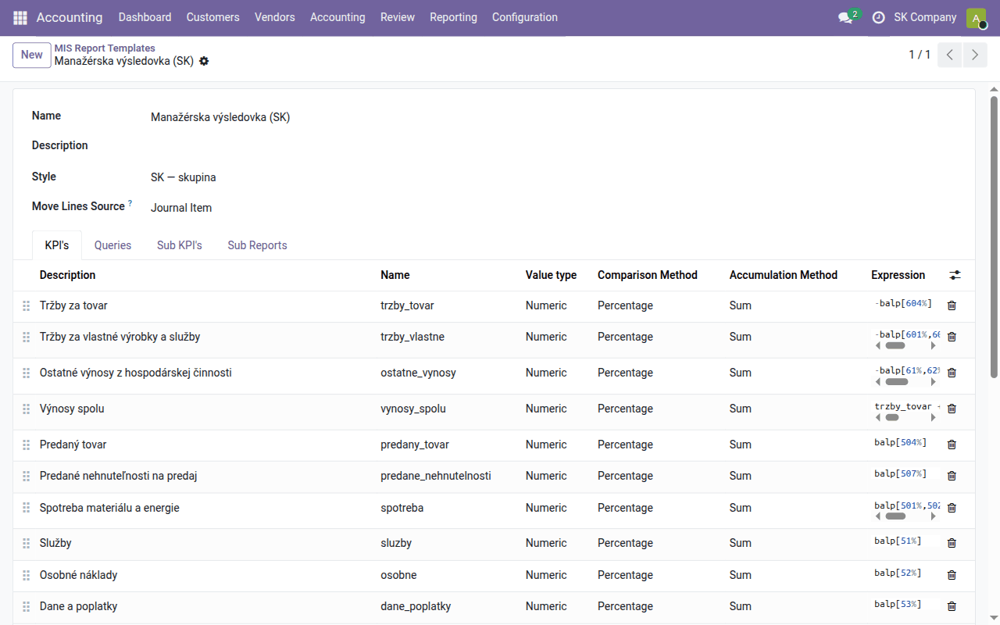

Task guide
Management reports with MIS Builder
Build, run, compare, drill into and annotate management reports — the management P&L, the executive summary, or one of your own.
| Country | Czech Republic and Slovakia |
|---|---|
| Edition | Odoo Community |
| Covers | mis_builder, l10n_sk_mis_reports, l10n_cssk_mis_executive_summary, mis_builder_kpi_details, mis_builder_column_breakdown, mis_builder_annotation_icon, board |
What it is for
Odoo Community has no management reports of its own: its Reporting menu gives you the statutory statements and the ledgers, not a manažérska výsledovka with this month against last month. The OCA engine MIS Builder fills that gap. A MIS report is a table: rows are figures you define (revenue, gross margin, debtor days…) and columns are periods you choose (a month, a year, this year against last).
A MIS report is a management view. It is not the statutory súvaha or výkaz ziskov a strát filed with the účtovná závierka — those come from the statutory statements modules and follow the official rows. Do not try to reconcile the two line by line.
The MIS Builder screens are in English even in a Slovak or Czech database: the OCA module carries no Slovak or Czech translation. This guide quotes the labels as you will see them.
Two things: a template and a report
| What it holds | Where | |
|---|---|---|
| Template (MIS Report Template) | the rows: each figure, its formula, its style. No dates. | Accounting → Configuration → MIS Reporting → MIS Report Templates |
| Report (MIS Report) | a template + periods + filters. This is what you open, print and export. | Accounting → Reporting → MIS Reporting → MIS Reports |
One template can serve many reports: the same management P&L as a monthly report, a year-to-date report, and a report comparing two years.
What a user may do follows their Accounting role (Settings → Users & Companies → Users, tab Access Rights): Read-only and above open the MIS reports and the journal items behind a figure; creating reports and changing templates needs Accountant.
Templates you already have
- Manažérska výsledovka (SK) — a management P&L on the Slovak chart of
accounts, from
l10n_sk_mis_reports. It groups classes 5 and 6 into revenue, cost and result lines. - Executive Summary (CZ/SK) — one page of cash, revenue and margins,
debtor and creditor days, current ratio and return on assets, from
l10n_cssk_mis_executive_summary.
Both are ordinary templates: open them, change a formula, add a line. Your changes survive module updates.
Running a report
- Open Accounting → Reporting → MIS Reporting → MIS Reports and click New.
- Give it a name and pick the Template.
- For one period, leave Comparison Mode off and fill From and To (or pick a Date Range).
- Click Preview. The report opens in the browser; Print gives a PDF, Export an Excel file.

By default only posted entries are counted. The Filters tab switches to All Entries (drafts included), and is where you limit the report to an analytic account or other journal-item condition (Analytic Domain). With several companies you can also report on more than one at a time (Multiple companies).
Comparing periods
Tick Comparison Mode and a Columns tab appears. Each line is a column:
- Actuals with Fixed dates — a period you type in.
- Actuals Relative to report base date — a period counted from the report's Base date (today when left empty): Period type month, year, week, day or date range, Offset (0 = the current one, −1 = the previous one) and Duration. Year to date stretches it back to 1 January. A report set up as "this month / last month" is still correct next month without touching it.
- Compare columns — the change between two other columns, in per cent for amounts.
- Sum columns — the sum (or difference) of other columns, for example a quarter made of three months.
For example: Tento mesiac (relative, month, offset 0), Minulý mesiac (relative, month, offset −1) and Rozdiel (compare columns, from Minulý mesiac to Tento mesiac).

To split one column into one column per journal, partner or company followed
by the total, see mis_builder_column_breakdown.
Reading a report
- Click a figure to open the journal items behind it, already filtered to that row and column. From there you can group, filter and open each entry.
- Point at a figure to see the formula it was computed from.
- Search above the report narrows every figure at once: type a partner, an account or a journal, or use Custom Filter… for any other condition. Save current search keeps the filter for next time, under the report's Favorites.
- Unfold a row by account — or, with
mis_builder_kpi_details, by partner, product, journal, month or any other field — where the template turns that on for the row.

Notes on figures
You can attach a note to any figure, for example "includes the framework contract signed in October":
- Point at the row: a note icon appears next to each figure that can take a note. Click it and write the note.
- A figure with a note keeps a filled icon and a footnote number; the notes are listed under the report and printed in the PDF and the Excel export.
- Click the filled icon to change the note; delete it from the list under the report.

Who may see and write notes is a user right: Settings → Users & Companies → Users, open the user (developer mode on), tab Access Rights, section Extra Rights — MIS Report: view annotations or MIS Report: add annotations. The administrator has both. Detail rows unfolded by account cannot take a note.
The note icon itself comes from
mis_builder_annotation_icon; it
replaces OCA's dropdown arrow, which looked as if the row could be expanded.
Putting a report on a dashboard
Add to dashboard on the report places it on Dashboards → My Dashboard, where it refreshes each time you open it.
Changing a template
Open the template from Accounting → Configuration → MIS Reporting → MIS Report Templates. Each line (KPI) has a Name (technical, used in other formulas), a Description (what the report shows) and an Expression:
| Expression | Means |
|---|---|
balp[604%] |
balance of the accounts starting with 604, movements in the period |
bale[211%] |
balance at the end of the period (cash, debts…) |
bali[211%] |
balance at the start of the period |
crdp[6%], debp[5%] |
credit or debit movements only |
-balp[6%] |
revenue shown positive (credit balances are negative) |
trzby - naklady |
a line computed from other lines, by their names |

A line's Name must not begin with bal, crd, deb or another
expression prefix: MIS Builder rewrites those as text, and every line that
refers to it shows #ERR. Name it trieda_54_55, not bal_54_55.
Rows are shown with the template's Style and each line's own style (bold totals, hidden helper lines, number of decimals). Styles are under Accounting → Configuration → MIS Reporting → MIS Report Styles.
When something looks wrong
| You see | Look at |
|---|---|
| An empty report | the company on the Filters tab, and whether the entries are posted |
#ERR in a row |
point at it for the error; usually a misspelt line name or a name starting with an expression prefix |
| A figure that does not match the general ledger | the column's dates and Target Moves; click the figure to see exactly which items it counts |
| A column shown in red on the Columns tab | its dates are incomplete: a relative column needs a period type |